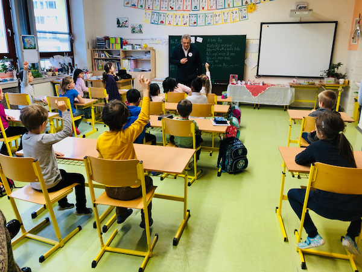

Partnery pro Letokruh a dobrovolníky jsou přijímající organizace, nejčastěji ze sociální oblasti. Spolu s nimi hledáme vhodné možnosti a příležitosti pro zapojení proškolených a motivovaných dobrovolníků.
Nenechte si ujít pravidelná supervizní setkání pro pracovníky, kteří pracují s dobrovolníky
Akreditovaný prezenční kurz v rozsahu 8 hodin
Během úvodního workshopu organizace učíme, jak dobrovolníka zapojit
do činnosti, jak s ním pracovat dobře a efektivně, jak ho podporovat.
Podělíme se o praktické zkušenosti.
Rádi uspořádáme workshop ve vaší organizaci nebo pro určitou skupinu odborné i laické veřejnosti.
Kontaktujte nás
Quote text goes here...